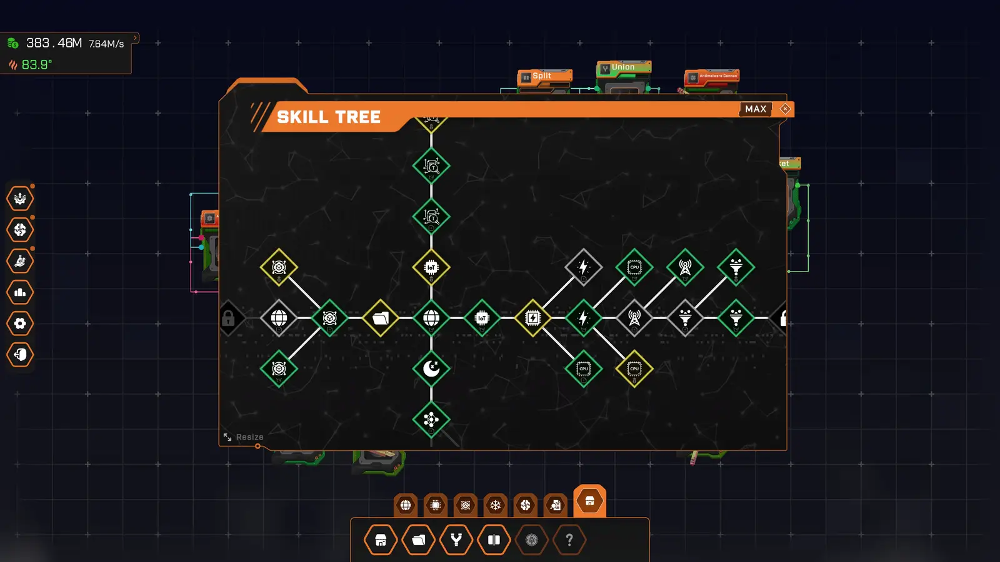
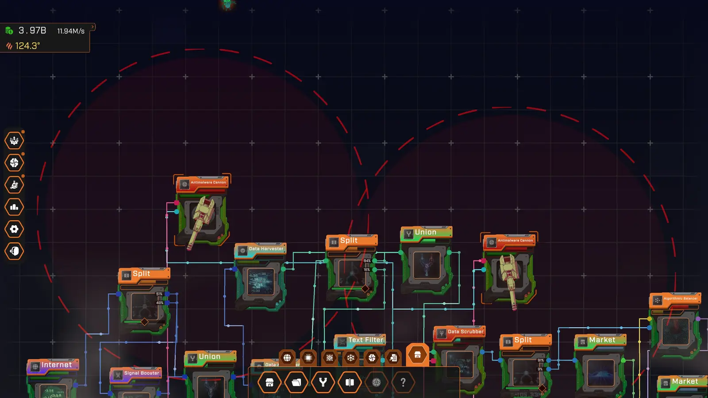
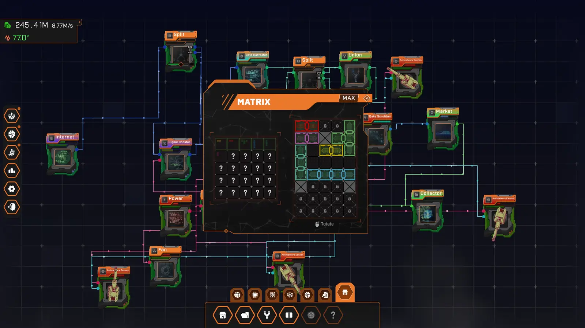
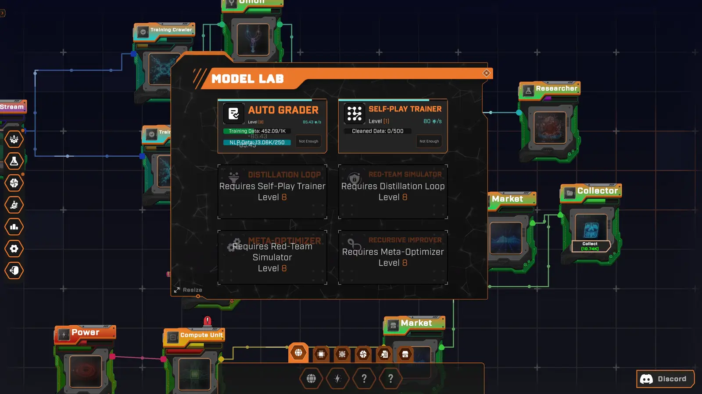
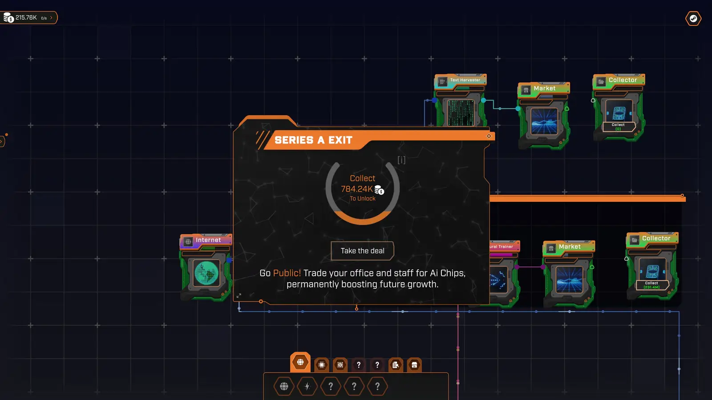

Game mechanics
Everything that happens under the hood, explained in plain language. Each section links to the exact equation on the Formulas page.
// Simulation
The factory runs on a fixed clock: 5 ticks per second (one every 0.2 s), independent of your frame rate. If a frame stutters, the game catches up by running up to 150 ticks at once. Each tick processes nodes in dependency order, so sources run before the nodes they feed. A resource can travel through a whole chain in a single tick.
// Production & capacity
Every production node has a recipe (inputs → outputs) and a capacity: the most recipes, or sets, it can complete per second. Base capacity grows ×3 per tier, from 3 sets/s for a Data Stream up to about 20,000 for the Predictive Trading Bot, so every new tier arrives with real weight. It then grows with skill-tree upgrades, the Matrix and prestige.
Each tick, a node:
- Checks how many full sets its stored inputs can pay for. It is limited by the scarcest input.
- Caps that at capacity × tick length.
- Produces nothing if any input can't cover even one full set. Every input must be connected.
- Consumes the inputs and outputs output × sets × multiplier.
The multiplier combines the factory's heat multiplier with the bugs on that node: M = heat multiplier × 0.75bugs (each attached bug costs 25%). A healthy, cool factory runs at ×1.0 to ×1.1. Sources without inputs just produce capacity × output × M per second.
// Wiring & ports
Wires always go from an output port to an input port, and the resource types must match. Hover a port to see its resource. The shape and color follow the resource table.
- Outputs can feed many wires. Inputs on production nodes take only one wire each, so use a Union to merge.
- Generic inputs: Data (any) accepts any of 9 data types. Process (any) accepts CPU, GPU or Inference Processing.
- Dynamic ports (Market, Split, Union, Researcher) adopt the type of the first thing you connect.
- When one output feeds several consumers, the output is shared in proportion to demand. Each production consumer gets
its demand ÷ total demand. Consumers without a rate (Market, Collector, Split, Union, Researcher) are counted as asking for the average demand of the others.
// Split & Union
Split
One input, two outputs (A and B). A slider sets the fill ratio f (default 0.5): A gets f of the flow and B gets 1 − f. Use it to guarantee a fixed share, for example 20% of Training Data to the Researcher and 80% to refining. The ratio is saved with your factory.
Union
Merges several flows of the same type into one output: out = sum of inputs. Use it to combine many harvesters into a single high-capacity consumer, or to feed one Market from many lines.
Both are free, unlimited and produce no heat.
// Markets & Collectors
A Market sells everything it receives, as fast as it arrives, for Money. It has no capacity limit. The price per unit is that resource's current sell price: the base price from the resource table, raised by Sell Rate upgrades (5 levels, +20% each, up to 2× base). Refining always pays more than selling the ingredients, even fully upgraded. Markets are not affected by heat, bugs or prestige.
Can't be sold: Data Stream and Energy. Everything else has a price, from Training Data at $0.16 to the Stock Token at $7,580.
A Collector stores the Money its Markets send. Click Collect (or right-click → Collect) to bank it. The bar is just a visual: it's full at about 100 seconds of income, but there's no real cap. Buy Auto Collect ($53K, one-time skill) and every coin is banked instantly.
// Node slots
Every production node type has a slot limit. You start with 1 Data Stream and 1 Training Crawler, and 0 of everything else. You unlock more in the skill tree:
- Node slots cost Research, up to 12 extra slots per type. Each extra copy costs ×5 the previous one.
- Processing Base (750 RP) gives your first Power and Compute Unit slots at once.
- Antimalware Cannon and Fan slots cost Money (×3 per slot), up to 20 cannons and 60 fans.
- Market, Collector, Split, Union and Researcher are unlimited and free.
Data Stream, Power and Edge Node copies are much pricier (×32, ×16 and ×43 per copy): every copy shares the line's upgrade level, so a new one multiplies that whole line. Each node card shows its next slot price.
// Skill tree
Open it with Z. The tree starts at Data Stream Speed I and branches into about 100 nodes. Each unlock reveals its neighbours. There are four kinds of skill:
- Rate upgrades (Money, 5,000 levels): each level adds +1× the node's base rate, and every 25 levels the rate doubles (a milestone). Cost grows ×1.1 per level for Data Stream, Training Crawler, NLP Preprocessor, Power and Edge Node, and ×1.12 for everything else.
- Sell Rate upgrades (Money, 5 levels, ×1.5 cost each): +20% price per level, up to ×2.
- Slot unlocks (mostly Research): +1 node of that type.
- Utility: Auto Collect, Processing Base, Offline Time (+2 h per level), Fan cooling, Cannon fire rate and range.
Use the buy-mode switch (×1 / ×10 / ×100 / Max) to buy many levels at once. Right-click a skill to center the view on it.

// Heat
Your whole factory shares one temperature. It starts at the ambient 24 °C. Every working node adds heat (see the Heat stat on each node card), fans remove it, and the factory constantly drifts back toward ambient. The temperature settles at:
So a factory with a total of 500 heat settles around 74 °C, and one with 2,000 heat reaches 224 °C. Changes take about 10 seconds to settle. A node's own heat ramps up over 2 seconds when it starts working and cools to 0 when idle.
Temperature sets a global production multiplier for all production nodes:
| Temperature | Multiplier | State |
|---|
Above 500 °C the factory is in Overload: fire particles appear and output falls to 20%. Below 0 °C ice particles appear and you get a bonus. With enough fans you can push toward absolute zero for up to ×1.6.
Fans cool the factory. Each fan provides −30 × level heat. Fan slots and fan upgrades cost Money. Malware bugs add heat too, about 100 each.
// Malware bugs
Once the tutorial is done, malware bugs start crawling into your factory: roughly one every 60 s (±20%), and only while you are looking at the game: an unattended factory is never punished. At most 3 are active at a time.
A bug latches onto a random production node and costs it 25% of its output (two bugs: ×0.56). Each bug also adds about 100 heat to the factory.
Kill them by clicking them. You're rewarded with about 30 seconds of your current income (±20%), and quick successive clicks build a streak worth up to +100%. Cannon kills pay half. Or build an Antimalware Cannon: it turns toward the nearest bug in range and zaps it with a laser. Upgrade its fire rate (+1 shot/s per level) and range (+1% per level). There are achievements for 50, 200 and 500 kills.

// The Matrix

The Matrix is a 5 × 8 grid of plug-in cells (18 unlocked at the start). You fill it with items, one per node type plus Fan and Offline Time. Each item has a shape, like a puzzle piece, and a % bonus to its node's rate. The bonus only counts while the item is placed on the grid.
- Unlock an item with Money. Each item is priced for the moment its node arrives: about two minutes of your income at that point.
- Left-click a slot to randomize the bonus (Money, ×1.07 per roll). Rolls are centred on the roll count (about +1% per roll) and can only improve the bonus. After 5 rolls without improvement, the next one is guaranteed to beat it.
- Right-click a slot to reshape the item (Research, ×1.07 per level). You get three shapes to pick from; click outside them to keep the current one. Shapes start at 7 cells and lose one cell every 5 reshapes, down to a single cell after 30; only the layout is random.
- Unlock more cells with Money: $270K for the first extra cell, ×4 for each one after that.
While dragging an item, R or right-click rotates it and F or the wheel flips it. Right-click a placed item to pick it back up.
// Model Lab & Research
The Model Lab (C) is where you create Research. Your Researchers bank resources into a research stock. Models spend that stock to deploy and level up, and deployed models produce Research every second, forever. It keeps going even through prestige.
- Output per second = base × growthlevel − 1 × prestige bonus.
- Level-up cost grows by the model's requirement growth each level. Some requirements only kick in at a certain level. For example, Auto Grader starts asking for NLP Data at level 3.
- Reaching level 5 on a model unlocks the next one, with a 20× bigger base reward.
- A Researcher only accepts resources that an unlocked model currently needs.

| Model | Base Research | Growth / level | Requirements (base amount) | Cost growth | Unlocks at |
|---|
// Prestige & AI Chips

When your lifetime Money passes $2B, you can go public. You trade your office and staff for AI Chips, which permanently boost future growth.
- Chips earned = 150 × (lifetime money ÷ $2B)0.35, minus the chips you've already earned. So $2B gives 150 chips, $20B about 336, and $2T about 1,683. The bar in the prestige window shows your progress toward the next chip.
- Bonus = 1 + chips ÷ 150. 150 chips double your production, and 300 triple it. It applies to every rate stat and to model Research output.
- Reset: nodes, Money and other resources, the skill tree and the Matrix.
- Kept: AI Chips, lifetime totals, the research stock, model levels and heat.
Patents and the R&D Board. Every prestige also pays Patents (about √(chips ÷ 10), so the first one gives ~4). Spend them on the R&D Board (B, or the button in the prestige window), a second skill tree whose perks are never reset by prestige.
| Perk | Effect per level | First level | Max |
|---|---|---|---|
| Production Boost | +10% output of every node | 2 Patents | 25 |
| Research Grant | +20% Research from models | 3 Patents | 15 |
| Head Start | Start each run with $13K, ×10 per level | 2 Patents | 5 |
| Offline Contract | +1 h offline earnings cap | 2 Patents | 6 |
| Bug Bounty | +25% bug rewards | 2 Patents | 4 |
| Automation Patent | Auto Collect stays unlocked after prestige | 4 Patents | 1 |
| Matrix Patent | Unlocked Matrix cells stay unlocked | 12 Patents | 1 |
// Offline earnings
When you come back, the game pays out what your factory would have made while you were away, based on your production rates at the moment you left. It's capped by the Offline Time stat: 2 hours at the start, and +2 hours per upgrade (5 upgrades, up to 12 hours). The Offline Time Matrix item boosts it further.
// Saving
The game saves automatically once the tutorial is complete: periodically, when you pause, when the window loses focus, and on quit. It saves everything: your graph, wires, groups, resources, skills, Matrix, models, camera position, prestige, and kill count.